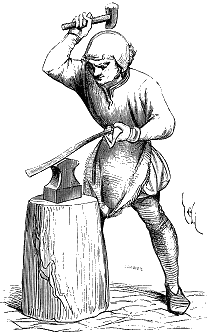
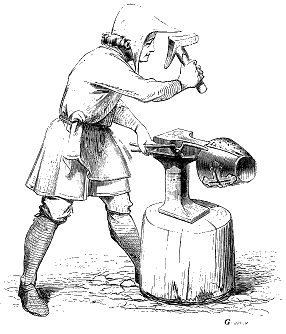

Eugène VIOLLET le DUC
Dictionnaire raisonné du mobilier.
 Figure 1
ENCLUME, s. f. (englume, engluge, bigourne). Masse de fer aciérée affectant diverses formes suivant le besoin, fichées sur une bille de bois, et servant à battre le fer à chaud ou à froid. Les armures de fer, la grande quantité d'ustensiles et de membrures de fer dont on se servait pendant le moyen âge en France, en Angleterre et dans le nord de l'Italie, firent que les forgerons acquirent une grande habileté. Avant même l'emploi des armures de plates, c'est-à-dire jusqu'à la fin du XIIIe siècle, la fabrication des heaumes des mailles, des armes offensives, exigeait déjà beaucoup d'adresse dans le maniement du fer. Les forgerons se servaient donc d'enclumes de formes variées suivant la nature du travail. Il y en avait de plates et de carrées, sortes de tas, pour battre le fer à froid ou faire des rivets ; d'étroites à faces inclinées pour amincir des pièces longues (fig. 1). Il y en avait une ou les deux extrémités latérales se terminaient en cône horizontal (bigornes), afin de permettre d'arrondir les pièces de fer au marteau.

Figure 2La figure 2 montre un forgeron rivant les pièces d'un heaume. Ces deux forgerons ont des tabliers de peau devant leur cotte. Le dernier est coiffé du chapeau de feutre dont la visière permet de garantir les yeux contre les escarbilles incandescentes du fer ou l'ardeur du feu de forge. Cet outillage du forgeron est resté le même.